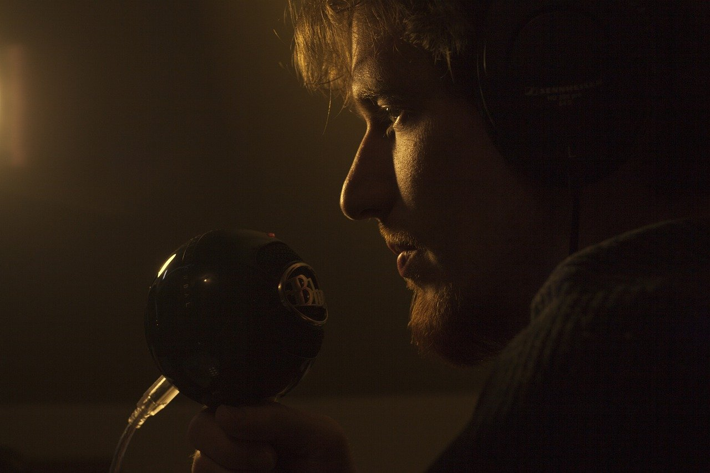

Guys and Gals,
I have recently been getting lot of doubts regarding coding so I thought of sharing with you guys what i know about coding, job industry and how to kickstart yourself being in a private college(you know what I mean).
So this is a step forward in holding hands togather and pushing each other forward because looking at the bigger picture, competiton among us and keeping knowledge away from each other will not help at all. What I mean to say is that maybe you know stuff that I dont or maybe I know stuff that you dont so hiding it away in our own space might make you better over others but pause for a second and look back and realise, you will be ruling over noobs whereas you are helping others pushing them to do something better you are improving your own social circle that is going to stick with you through the rest of the 3 years of college and you are challenging yourself to match up to the standards of people you teach.
"College tho select kar liya batch bhi decide ho gayi but ab us batch ko gaali deni hein ya fir saath mein aage bhadna hein that totally depends on you."
see I am from a residential school and no matter we had different friends and all but there was a sense of togatherness among us because over there friends were family and they still are, so many people are going to be relocating from different parts of India and coming to greno, so what is better than joining supportive batch mates in the college itself
I believe we can help each other out if we are togather in it, come up with what you are good at teach your skill to others take initiative...Honestly if you have such kind of attitude or can atleast practise on it your career will reach new heights I can promise you about that as I have seen this happen.
lambi speech hein but pls try to change your mindset to a healthy one if you are really serious about your career, college mein aa gaye ho yaar grow up and think up of something that everyone can benefit from maybe you could turn the same into an empire...thats how many businesses have shot up.
Kuch nhi to atleast dream big. Selections open for students with the same growth oriented mindset...you will be part of a community of like minded people . Reading this message any idea pops in your head pls share I am open to suggestions. Send me a dm on same whatsapp number. Also note we are lacking on communities in this college so I can assure you about that I planning to create our own. Discord is neccesary. anybody disagrees to this totally fine. you can go your own way. no grudges will be held against you, hatred is not my thing. PS: I am also doing this so that I can solve your doubts at once rather than individually messaging to everybody. 😅